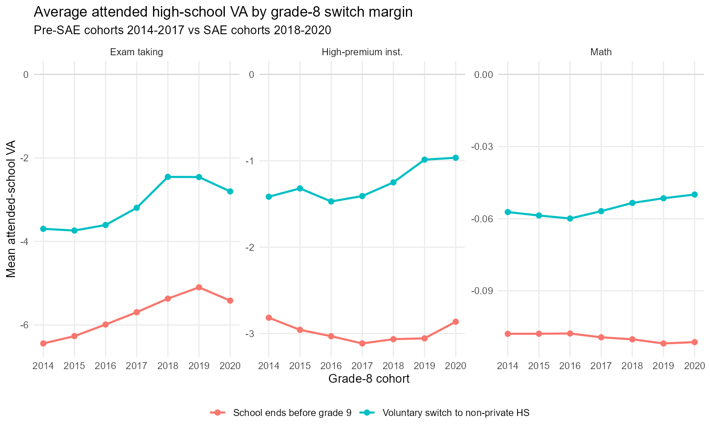

Pre-SAE versus SAE attended-school VA accounting
Average attended-school EB VA by grade-8 switch margin. See notes below for the pre-SAE continuation analogue.

| Group | Outcome | Pre mean | SAE mean | Change | Unit | Pre N | SAE N | Pre VA coverage | SAE VA coverage |
|---|---|---|---|---|---|---|---|---|---|
| School ends before grade 9 | Exam taking | -6.112 | -5.296 | 0.816 | percentage points | 419,131 | 289,560 | 97.6 | 98.4 |
| School ends before grade 9 | Fin. aid app. | -0.664 | -0.070 | 0.594 | percentage points | 419,131 | 289,560 | 97.6 | 98.4 |
| School ends before grade 9 | High-premium inst. | -2.975 | -2.994 | -0.019 | percentage points | 419,131 | 289,560 | 96.2 | 97.8 |
| School ends before grade 9 | High-premium field | 0.107 | 0.195 | 0.088 | percentage points | 419,131 | 289,560 | 96.2 | 97.8 |
| School ends before grade 9 | Higher-ed enrollment | -1.916 | -1.577 | 0.338 | percentage points | 419,131 | 289,560 | 97.6 | 98.4 |
| School ends before grade 9 | Verbal | -0.090 | -0.091 | -0.001 | outcome SD | 419,131 | 289,560 | 96.2 | 97.8 |
| School ends before grade 9 | Math | -0.108 | -0.111 | -0.003 | outcome SD | 419,131 | 289,560 | 96.1 | 97.8 |
| Voluntary switch to non-private HS | Exam taking | -3.564 | -2.574 | 0.990 | percentage points | 156,083 | 99,026 | 99.0 | 99.9 |
| Voluntary switch to non-private HS | Fin. aid app. | -1.532 | -1.200 | 0.332 | percentage points | 156,083 | 99,026 | 99.0 | 99.9 |
| Voluntary switch to non-private HS | High-premium inst. | -1.404 | -1.070 | 0.334 | percentage points | 156,083 | 99,026 | 97.4 | 99.0 |
| Voluntary switch to non-private HS | High-premium field | -0.406 | -0.348 | 0.058 | percentage points | 156,083 | 99,026 | 97.4 | 99.0 |
| Voluntary switch to non-private HS | Higher-ed enrollment | -1.383 | -1.116 | 0.267 | percentage points | 156,083 | 99,026 | 99.0 | 99.9 |
| Voluntary switch to non-private HS | Verbal | -0.046 | -0.042 | 0.005 | outcome SD | 156,083 | 99,026 | 97.4 | 99.0 |
| Voluntary switch to non-private HS | Math | -0.058 | -0.052 | 0.007 | outcome SD | 156,083 | 99,026 | 97.3 | 99.0 |
Notes
- Pre-SAE cohorts are grade-8 cohorts 2014-2017; SAE-era cohorts are 2018-2020.
- Middle-school origin is the first observed grade-8 RBD; high school is most_time_RBD over the four years after grade 8, using the same attendance/promotion/highest-attendance duplicate logic as the paper construction.
- For pre-SAE years the continuation split uses a registry analogue: whether the origin RBD has grade-9 enrollment in the next school year. The literal SAE offering file is only available for the post period.
- Voluntary switchers are students whose origin has grade-9 continuation evidence, whose most-time high school differs from the origin, and whose destination is not private paid (COD_DEPE2 != 4).
- Attended VA is the existing EB school value measured on the 2017-2020 VA sample and joined to the attended most_time_RBD.